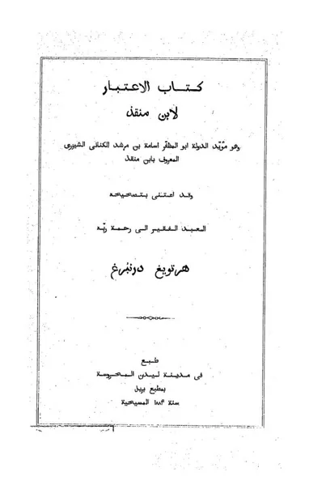

كتاب الاعتبار
Kitab al-I'tibar (Usamah bin Munqidz)
Baca Kitab al-I'tibar (Usamah bin Munqidz) (كتاب الاعتبار) karya Usamah ibn Munqidh secara gratis di Maktabah Ilmu: teks Arab, Indonesia (sebagian terjemah dibuat AI). Tanpa daftar, tanpa iklan.
Buka kitab iniLihat lemari ilmuDaftar isi
- [ قتال الإفرنج]
- [أسامة في دمشق (1138 - 1144 م) ]
- [أسامة في مصر (1144 - 1154م) ]
- [زيارة أسامة الثانية لدمشق (1154 - 1164 م) ]
- [معارك مع الإفرنج ومع المسلمين] (1)
- [معارك مع الإفرنج ومع المسلمين] (2)
- [مكافحة الأسود وسائر الضواري]
- [اختبارات حربية]
- [طبائع الإفرنج وأخلاقهم]
- [اختبارات وملاحظات]
- [الباب الثاني أخبار ونوادر ]
- [أخبار الصالحين رضي الله عنهم أجمعين. ]
- [الشفاء بطرق غريبة]
- [الباب الثالث أخبار الصيد ]
- [الصيد بسورية والجزيرة ومصر]
- [والد أسامة صيادا]